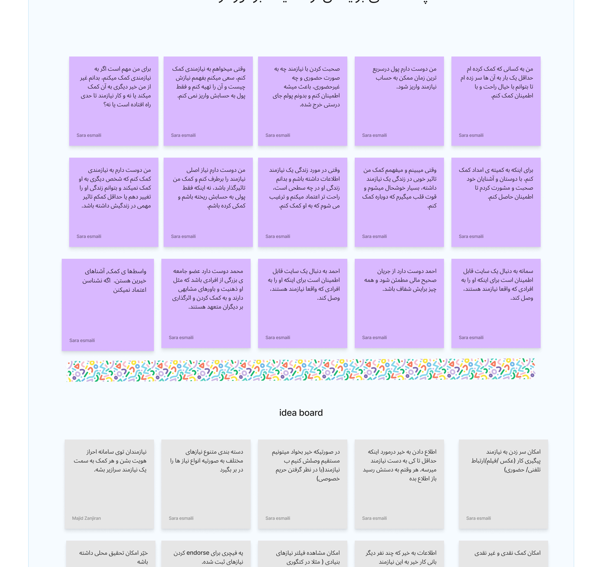

CASE STUDY / 01 · 2023–2025
Mehrabani
Designing clearer, more trustworthy paths for charitable support.
01 / OVERVIEW
A connected service for people giving, receiving, and managing support.
Mehrabani was commissioned by Imam Khomeini Relief Foundation and designed and developed with Aghigh Studio. It brings together aid programs, donors, people in need, and operational teams in one digital charity platform.
- My role
- UI/UX Designer &
UX Researcher - Contribution
- Research synthesis, user flows, information architecture, wireframes, UI design, prototypes, and the landing page
- Team
- Aghigh Studio
- Scope
- Charity, support programs, credits, logistics, and organizational workflows
02 / THE CHALLENGE
Giving is often shaped by uncertainty.
People need to understand what they are supporting, where their contribution goes, and what happens next. Meanwhile, people receiving support and teams managing credits, products, content, and logistics need practical, connected paths.
03 / RESEARCH
Listening before designing
The research included 16 participants across four audience groups, with four people representing each persona. Interviews were brought together through empathy, affinity, and priority mapping to make recurring needs visible.



04 / KEY INSIGHTS
Trust is not one feature.
- 01
Trust has to be felt throughout the journey through clear programs, understandable choices, visible next steps, and transparent support information.
- 02
Different audiences need distinct paths, while the service must connect individual support with organizational operations.
- 03
A practical product structure matters when donations, credits, products, and logistics meet in one platform.
05 / DESIGN DIRECTION
From research to a connected service
The research became focused journeys for discovering aid programs, choosing ways to help, managing donations and credits, and supporting organizational workflows.
- Clearer information architecture
- Focused user flows for key tasks
- Reusable UI patterns across responsive screens
- Interactive prototypes to refine the experience

06 / FINAL SOLUTION
An approachable entry point to giving
I designed the Mehrabani landing page to introduce its purpose, explain support programs, and guide people toward meaningful action within the established visual identity.
Visit live landing page07 / REFLECTION
Designing for an ecosystem, not a single screen.
Mehrabani strengthened my ability to turn qualitative research into practical product decisions. It showed me how clarity in a small interaction can affect trust across an entire service.